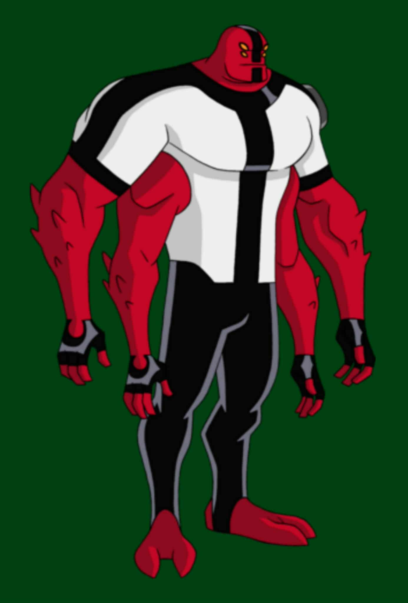

1.General Info:
Name: Four Arms
Species: Tetramand
Home Planet: Khoros
First Appearance: Ben 10 (2005 original series)
2.Appearance:
Very tall and muscular alien (about 12 feet tall).
Red skin with black markings.
Four strong arms and two yellow eyes.
Wears the Omnitrix/Ultimatrix symbol on his chest.
3.Abilities & Powers
1.Super Strength
One of Ben’s physically strongest aliens.
Can lift extremely heavy objects (cars, buildings, etc.).
Can smash through solid steel and rock.
2.Enhanced Agility & Jumping
Despite being huge, Four Arms can jump long distances.
Often uses this to create shockwaves when landing.
3.Shockwaves
By clapping his hands together or stomping, he creates powerful shockwaves that knock enemies back.
4,Durability
His tough skin gives him high resistance against physical attacks.
Can withstand extreme impacts and explosions.
4.Weaknesses
1.Large size makes him less suitable for stealth missions.
2.Not very fast compared to smaller, quicker aliens (like XLR8).
3.Sometimes his strength causes unintended damage.